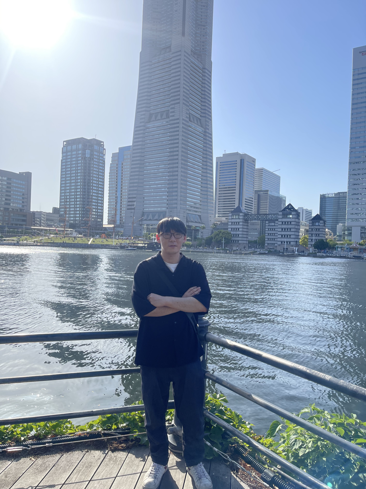

僕について
about me

自己紹介
鈴木海斗
[すずきかいと]
群馬県邑楽郡板倉町出身 25歳
現在は、栃木県佐野市で物流センターで勤めており、主に届いた荷物の検品を担当しています。
前職は、群馬県明和工場で製造業をしておりました。当時は、生産ラインの前半を担当しており、溶接工程を担当していました。
私が溶接機で製品を溶接し、溶接した製品を後工程に送ることでラインの進行をスムーズに保ち、１日でも多く生産量を上げることを目標としていました。
また、自分が担当していた工程において、作業の効率化や工具の改善などを先輩や同僚と相談し、生産ラインの停止時間を短縮することに成功しました。
その結果、月間の生産量10%増加することができました。
[高校時代]
群馬県立板倉高等学校 普通科
2013年4月〜2016年3月卒業
高校在籍中では、飲食店、コンビニでアルバイト経験もあり、接客や商品陳列、レジ操作を担当しコミニュケーションスキルや販売スキルを身につけ、仕事に対する責任感も強くなりました。
[プログラミングを目指すきっかけ]
高校時代からプログラミングの仕事に憧れていました。その理由としては、高校入学と同時にスマートフォンを買ってもらい、自分がサイトやアプリケーションを使って買い物や情報をどのように設計しているのかを知って、自分自身で作ってみたいと思ったからです。
当時、自分のアイデアを形にすることに魅力を感じ、プログラマーとして働くことが夢でした。
しかし、高校卒業後、家庭の事情により進学することができず就職することになりました。その後、SNSを閲覧中にweb制作の広告を読み、自分の夢をもう一度追い続けることで、周りの人々に影響を与えられる存在になりたいと思い再びweb制作を目指すことに決めました。
[学んできたこと]
プログラミングの知識を得るために、オンラインスクールで学びました。
主に、zoomを使ってエンジニアとのマンツーマンで、教材を通じてプログラミング言語やフレームワークの基礎から応用まで幅広く学習しました。
具体的には、HTML/CSS,JavaScriptをはじめとするフロントエンド技術や、PHPなどのバックエンド技術について学びました。
また、データベースの設計やバージョン管理ツールの使用方法など実践的なスキルを身に付きました。
現在もプログラミングの勉強に取り組み、開発の現場で必要とされるスキルや知識を身につけるために日々努力しています。
趣味
hobby
映画鑑賞
さまざまなジャンルの映画を見ることで、ストーリー展開や演出技術などを見ることが好きで、自分自身の感性を磨くために欠かせないものとなっています。
また、映画館での映画鑑賞は臨場感があり、一緒に映画を観る人達との共有感も味わえるのが好きです。
ウォーキング
コロナ鍋の影響もあり、部屋で過ごすことが多くなり、身体を動かすことで、リフレッシュし、自然や街の景色も楽しみながらストレス解消にもつながり、ウォーキングの魅力に改めて気付かされました。
週末には近所の公園を歩きます。

音楽鑑賞
趣味3の説明をここに記載します。
技術
skill
HTML/CSS
基本的な構文化やタグの使い方を習得しました。
webページの構造化やスタイリングに関する知識を深め、セマンティックなマークアップを意識したコーディングを行えるようになりました。
また、レスポンシブデザインに対応するためのメデイアクエリやフレキシブルボックスモデルなど柔軟なレイアウトの作成方法も学びました。

JavaScript
基本的な文法や制御構造から始め、DOM操作や、イベント処理、アニメーションの実装などを学びました。
Ajaxを使った非同期通信やAPIの利用方法にも取り組みました。さらに、モダンなJaveSucuriptフレームワークの学習も行い、コンポーネントベースの開発や状態管理についても理解を深めました。

PHP
文法やデータ型、関数の使い方を学びました。データベースとの連携やフォームデータの受け取り、セッション管理など、Webアプリケーションの開発において重要な要素を学びました。
また、MVCアーキテクチャに基づいたフレームワーク（例：Laravel）の学習も行い、効率的な開発やセキュリティ対策の実装についても実践的な経験を積みました。
スキル4
スキル4の説明をここに記載します。